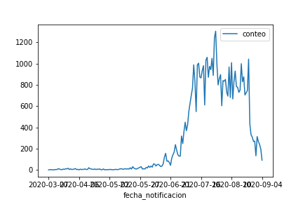
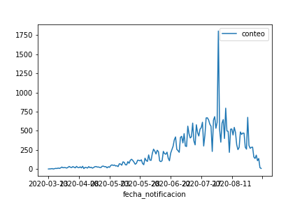
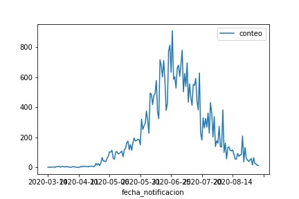
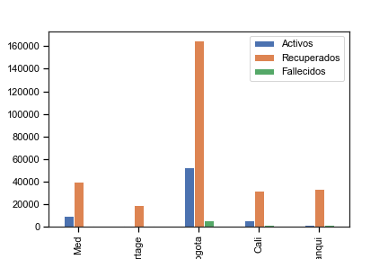
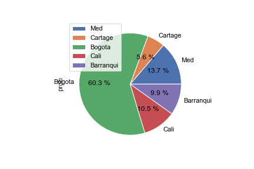

Pronóstico de la evolución de casos activos de SARS-CoV-2 en Colombia, trabajo final Analitica Predictiva, Universidad Naciona de Colombia
Dashboard COVID-19 en Colombia
Por su velocidad de propagación y su expansión a nivel mundial, el nuevo coronavirus se encuentra catalogado como pandemia por la Organización mundial de la salud.
En Colombia ya se han establecido diferentes normas y estrategias para abordar esta epidemia, sin embargo la cantidad de muertes a causa de la enfermedad y la capacidad del sistema de salud para responder eficazmente a las necesidades de los pacientes infectados continúan preocupando a todo el país.
Definición Problema de Analítica
A través del estudio de las 5 ciudades principales de Colombia, se pretende tener una aproximación del comportamiento del virus en la actualidad, la etapa de desarrollo en la que se encuentra el virus y a su vez, realizar una estimación de los nuevos casos de contagio y muertes que se podrían presentar en el corto y mediano plazo.
El origen de los datos para el siguiente análisis contiene la información de actualizada de la evolución de casos de COVID-19 en Colombia del cual se extrae la información que contiene alrededor de 21 campos de los cuales para el análisis se hace uso de ID, Fecha Modificación, Ciudad Ubicación, Departamento, Atención (Casos activos*, Fallecidos, Recuperados), Edad, Sexo, Tipo, Fecha Muerte, Fecha Recuperado, Tipo Recuperación.
Métricas Situación Actual Del País




Cantidad total de persona por estado en cada ciudad del país al dia de hoy

Porcentaje de personas contagiadas sobre la suma total de estas ciudades al dia de hoy
Análisis Descriptivo
Medidas Estadísticas
De acuerdo a la realidad del pais se realiza un análisis de las principales métricas por ciudad y se identifica un comportamiento individual para cada una de ellas, incluso el comportamiento historico de cada tipo de individuo de la muestra de datos.
Grafico con desviación y media por ciudad
En este gráfico muestra la evolución de casos y el comportamiento de los casos activos en comparación con los casos nuevos por día.
Modelos de Proyección
Para realizar una evaluación del as cifras y poder determinar u horizonge de evaluación del virus. Con lo anterior se plantearon dos modelos SIR y ARIMA.
Modelo SIR
El siguiente modelo muestra una proyección ajustada del COVID-19 en dos horizontes de tiempo de corto y mediano plazo. Se decide utilizar el modelo SIR para predecir la cantidad de contagios en los proximos 5, 10 y 15 días, generando diferentes escenarios de prónostico modificando las tasas de infeccion, recuperacion y mortalidad.
Usando la tasa promedio diaria general de infección, recuperación y fallecidos, se plantea el primer escenario del modelo SIR. Para este caso, gráficamente se evidencia que el pronóstico para casos reales presenta un crecimiento y el dato real empieza a decrecer, lo que da una primera percepción del mal ajuste
A continuación se muestra la evolución de casos y el comportamiento de los casos activos en comparación con los casos nuevos por dia
A continuación se muestra la evolución de casos y el comportamiento de los casos activos en comparación con los casos nuevos por dia
A partir de una análisis historico de los datos se extraen las siguientes tasas las cuales harán parte del modelo
Usando la tasa promedio diaria general de infección, recuperación y fallecidos, se plantea el primer escenario del modelo SIR. Para este caso, gráficamente se evidencia que el pronóstico para casos reales presenta un crecimiento y el dato real empieza a decrecer, lo que da una primera percepción del mal ajuste